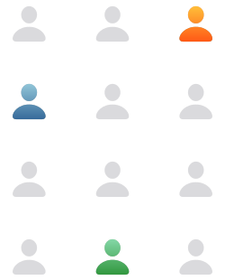
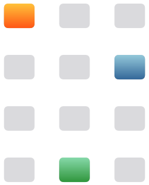

InDecision
Life deserves
your best thinking.


InDecision gives you a place to think. Out loud. In fragments. And over time. It can suggest perspectives you hadn't considered and reflect your ideas back in ways that make them easier to understand. All helping you find a path forward that feels considered, personal, and yours.
CHI '25 Tools For ThoughtNew Decision
One choice could
change your life.


InDecision is built for the decisions that matter most. The ones that shape who you are and who you'll become. Choosing a college or a career. Deciding where to live, or planning what's next, whether that decision is on your doorstep or years away.
Options & Criteria
Are you hearing
yourself? Clearly?
React to concrete options. Some you'll love, others not so much. Together, these choices surface the tradeoffs that matter and help build a clearer map of your priorities.
The Big Picture
Decisions are a work
in progress. So are you.
Collect options, define criteria, and capture new insights as they emerge. Over time, disconnected thoughts become a clearer picture of what you're trying to decide.
A canvas for life's
defining moments.

Behind the Design.
-
Deciding how to decide. InDecision explores how LLMs can support the iterative process of discovering, refining, and stress-testing what truly matters in a decision.
-

Designed alongside real decisions. The team piloted InDecision with people navigating meaningful life and work decisions, using think-aloud sessions and iterative prototypes to explore how reflection unfolds over time.
-
Getting ideas out of your head. The interface was designed to help people externalize vague thoughts, compare possibilities, and gradually clarify what matters to them.
-

You often "know it when you see it." Rather than asking users to define perfect criteria upfront, InDecision helps people react to concrete options and uncover patterns in what resonates with them over time.
-
Designed as a collaborative process. InDecision alternates between human judgment and AI-generated provocations, helping people refine decisions through reflection instead of automation.